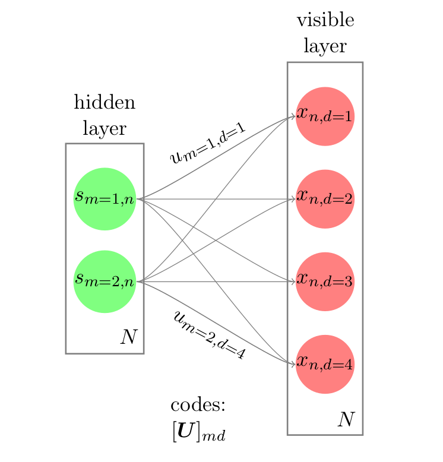
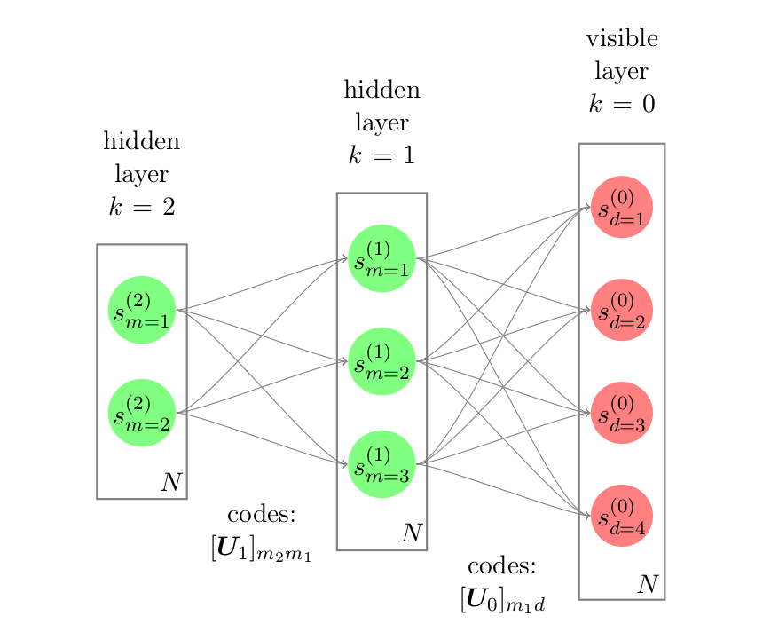
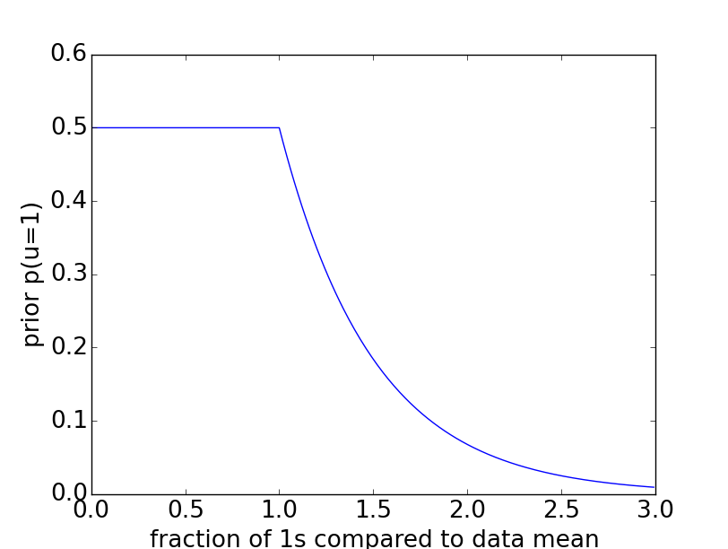
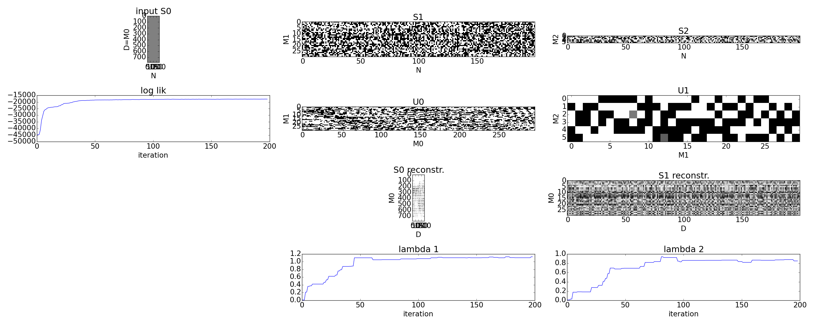
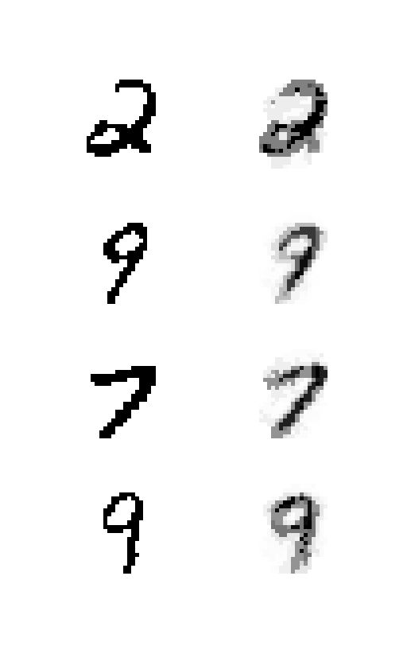
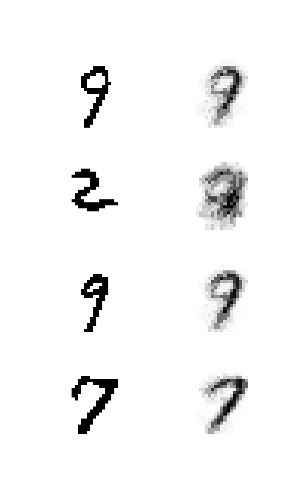
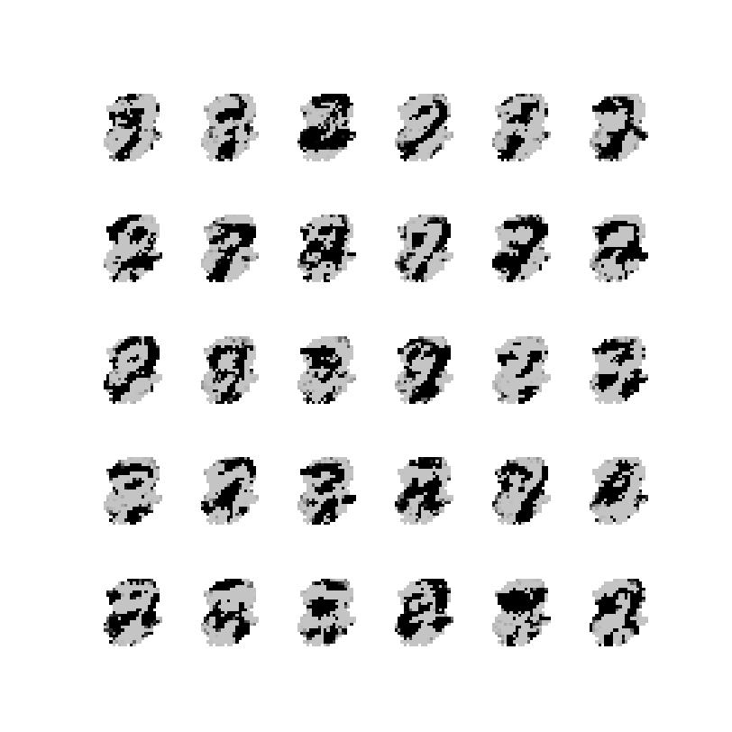
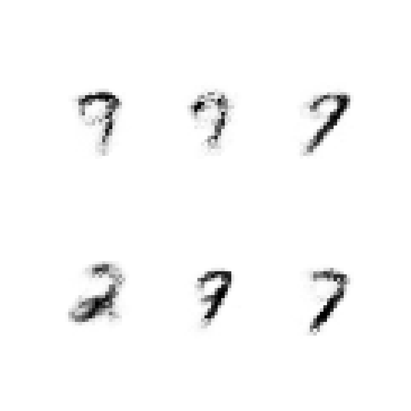

The Hamming Machine
Tammo Rukat
March 10, 2016
Basics
- Based on the hamming distance between two binary vectors \({h(\mathbf{x},\mathbf{u})}\) we construct a probability distribution of \({\mathbf{x}}\) given \({\mathbf{u}}\) with a dispersion parameter \({\lambda}\): $$ p(\mathbf{x}|\mathbf{u}) \propto \exp\left[ -\lambda h(\mathbf{x},\mathbf{u}) \right] $$
- We assume a set of \({M}\) binary vectors \({\mathbf{u}_{1\ldots M}}\), that we call codes.
- Each observations \({\mathbf{x} }\) is generated from a subset of these codes: $$ p(\mathbf{x}|\mathbf{U},\mathbf{s},\lambda) \propto \prod\limits_m p(\mathbf{x}|\mathbf{u}_m,\lambda)^{s_m} = \prod\limits_d \exp\left[ \sum_m s_m \lambda h(x_d,u_{md}) \right]$$
- We find the normalised probability to be sigmoidal: $$ p(x_d = 1|\mathbf{s}, \mathbf{U}, \lambda) = \frac{1}{1+\exp\left[ \lambda \sum_m s_m (2u_{md} - 1) \right]} $$
Sigmoid Belief Net
- $$ p(x_d = 1|\mathbf{s}, \mathbf{U}, \lambda) =\frac{1}{1+\exp\left[ \lambda \sum_m s_m (2u_{md} - 1) \right]} $$

Inference
- Gibbs sampling for \({\mathbf{u}}\) and \({\mathbf{s}}\) with uninformative priors.
- Metropolis Hastings for \(\lambda\) with inverse gamma prior.
- Precomputing quantities of the form $$ \log(1+e^{-\lambda m}); \,\,\,\, \text{for} \, m \in \{-M,\ldots,-1,0,1,\ldots,M\} $$ speeds up the computation.
Multilayer Hamming Machine

- The lower layer acts like a prior on the peripheral layer.
Toy Example

Sparsity priors
- Independent Bernoulli prior on every single code unit \({u_{md}}\)
- Bernoulli prior controlling the number of 1s in every code.
E.g. step-exp prior
 $$ p(u = 1) = \tfrac{1}{2} \mathrm{H}( 1 - q ) + \tfrac{1}{2} \mathrm{H}(q-1) e^{-a(q-1)} $$
Effect of sparsity prior

Example – MNIST
- 200 images of the units 2, 7, 9
- Two hidden layers, with 30 and 6 units respectively.
Sampling

Reconstructions
From the corresponding representations in layer 1 (left) and layer 2 (right)
 
Patterns

Patterns

Next steps
- Slice sampling
- Genome data